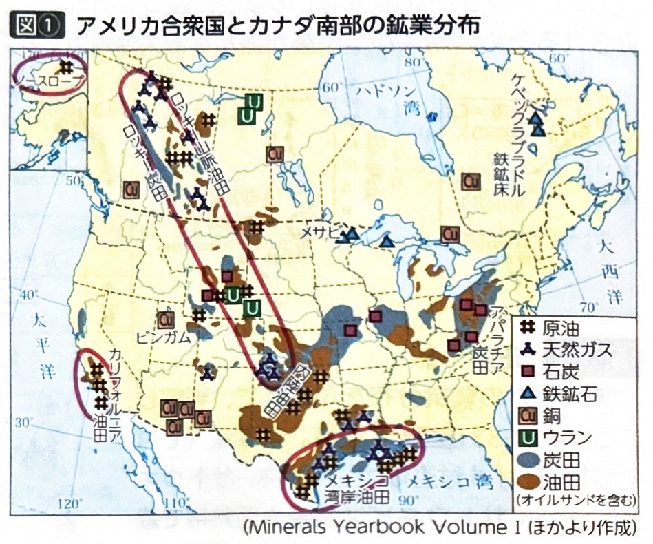
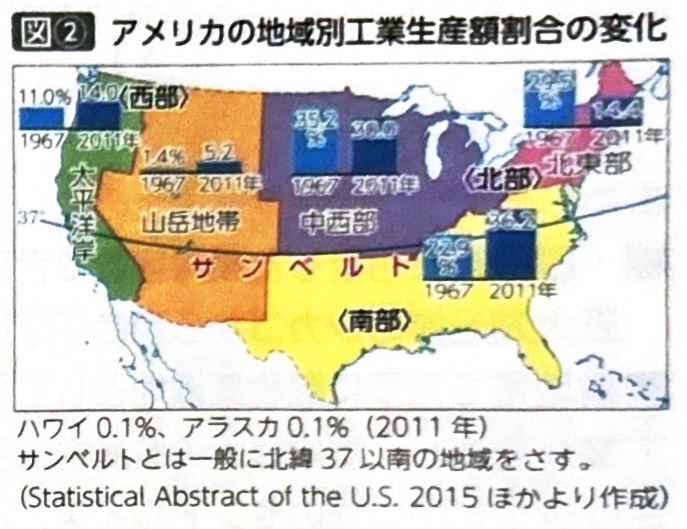
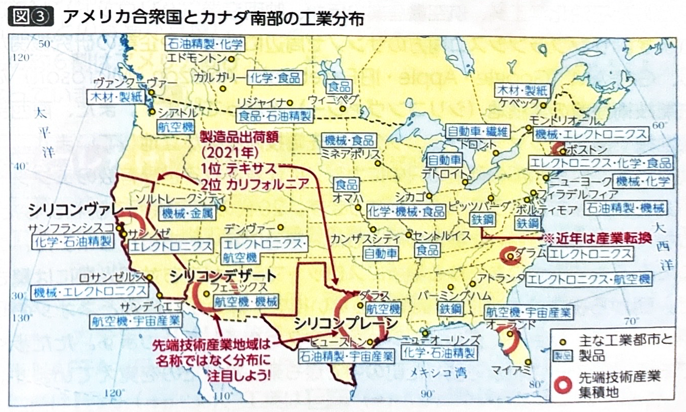
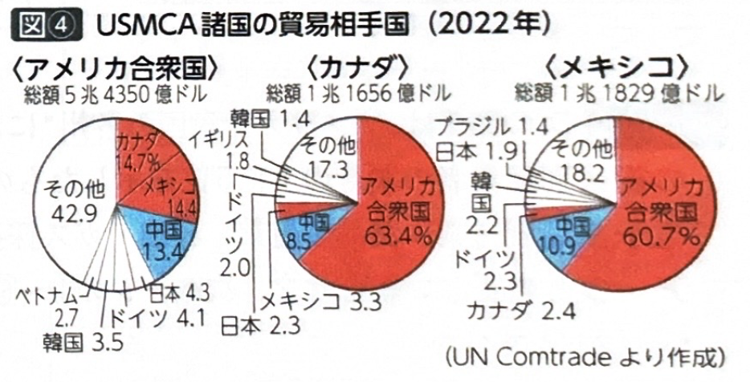

第7章 アングロアメリカ - 鉱工業
ポイント総復習
1. アメリカ合衆国の鉱業（シェール革命）
アメリカは膨大なエネルギーを消費するため、かつては原油輸入量世界一でした。しかし、近年新しい技術によってエネルギー事情が一変しました。
- シェール革命：2010年代以降、地下深くの頁岩（けつがん）層から採掘する「シェールガス・シェールオイル」の開発が急速に進みました。これにより、現在ではアメリカが原油・天然ガスの生産量世界一となり、エネルギー自給率も大幅に向上しています。
- 主な資源分布：五大湖付近のメサビ鉄山、東部のアパラチア炭田、南部のメキシコ湾岸油田などが古くから重要です。

2. 工業立地の変化と「サンベルト」
アメリカの工業は、歴史とともにその中心地を北東部から南部・西部へと大きく移動させてきました。
- かつての中心（北東部）：五大湖周辺や大西洋岸など。豊富な鉄鉱石や石炭、便利な水運を背景に、鉄鋼業や自動車工業などの重化学工業が発達しました。しかし、近年は設備の老朽化や日本車などの台頭による国際競争力の低下で衰退傾向にあり、この地域は「スノーベルト（雪の帯）」や「フロストベルト（霜の帯）」と呼ばれることもあります。
- 現在の中心（サンベルト）：北緯37度以南の温暖な地域を指します。1970年代以降、広大な土地や安価な労働力（メキシコ系移民など）、豊富なエネルギー資源を求めて企業が進出し、先端技術産業（ICTや航空宇宙産業など）を中心に急成長を遂げました。

3. アメリカの主要な工業都市
各都市と代表的な産業を必ずセットで覚えましょう。地図上の位置も重要です。
| 都市名 | 属する地域 | 主な産業・特徴 |
|---|---|---|
| ピッツバーグ | 北東部 | アパラチア炭田を背景に鉄鋼業が発達しましたが、現在は衰退し、医療や先端産業への転換を図っています。 |
| デトロイト | 北東部 （五大湖沿岸） |
世界的な自動車工業の中心地でしたが、外国車の台頭や産業の空洞化により衰退しました。 |
| サンノゼ （シリコンバレー） |
サンベルト （西海岸） |
スタンフォード大学などの研究機関が集積し、世界最大のICT（情報通信技術）産業の拠点となっています。 |
| ヒューストン | サンベルト （メキシコ湾岸） |
豊富な原油を活かした石油化学工業や、NASAの施設がある宇宙航空産業が盛んです。 |
| シアトル | 北西部 （太平洋岸） |
豊富な水力発電を活かしたアルミニウム精錬から発展し、航空機産業やICT産業（AmazonやMicrosoftの本社）が集積しています。 |

4. カナダの鉱工業
カナダは豊富な資源と自然環境を活かした産業が特徴であり、隣国アメリカとの結びつきが強いです。
- 鉱産資源：安定陸塊であるラブラドル高原で鉄鉱石、ロッキー山脈周辺で原油（オイルサンドを含む）や天然ガス、ウランなどを多く産出・輸出しています。
- 発電方法：河川や氷河湖などの水資源が豊富で、発電量の過半数を水力発電が占めています（アルミニウム精錬などに利用）。
- 経済的結びつき：資源の輸出先や工業製品の市場として、隣国アメリカ合衆国への経済的依存度が非常に高いのが特徴です（NAFTAからUSMCAへの移行など）。

※ 余談：南西部の砂漠地帯にあるラスベガスは、カジノなどのエンターテインメント産業で世界的に有名な都市です。
基礎問題（理解度チェック）
Q1. アメリカの鉱業について、空欄を埋めなさい。
アメリカでは2010年代以降、地下深くの頁岩層から採掘する
の開発が急速に進んだことでエネルギー自給率が大幅に向上し、原油などの生産量が世界一となった。また、古くからの資源産地として、五大湖付近の
や、東部の
などが有名である。
Q2. アメリカの工業立地の変化について、空欄を埋めなさい。
かつてアメリカの工業の中心は五大湖周辺などの北東部であったが、近年は北緯37度以南の
と呼ばれる地域に中心が移動している。この地域は温暖な気候や広大な土地に加えて、
の発展や、メキシコなどからの移民である
の安価な労働力を背景に急成長を遂げた。
Q3. アメリカの主要な工業都市について、空欄を埋めなさい。
西海岸のサンノゼ周辺は
と呼ばれ、大学や研究機関が連携して世界最大の
産業の拠点となっている。また、メキシコ湾岸のヒューストンは石油化学工業やNASAの施設がある
産業が盛んである。一方、北東部のデトロイトはかつて世界的な自動車工業の中心地であったが、現在は衰退傾向にある。
Q4. アメリカ北東部の代表的な工業都市であるピッツバーグは、アパラチア炭田を背景に発達した鉄鋼業が現在でも世界一の生産量を誇っており、衰退の兆しは見られない。
Q5. カナダは氷河湖や河川などの水資源が非常に豊富であるため、国内の発電量の半分以上を「水力発電」が占めているのが特徴である。